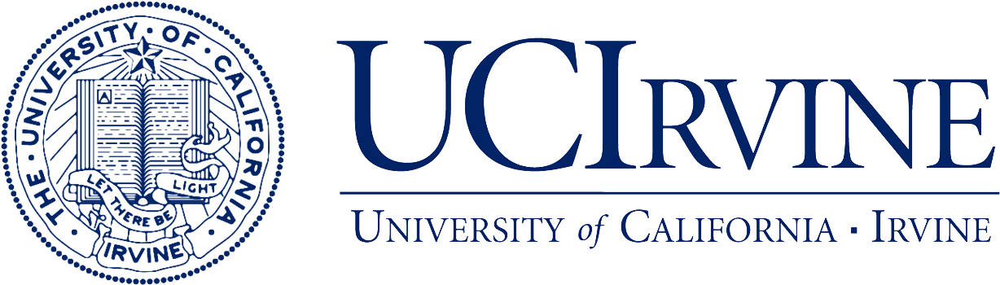
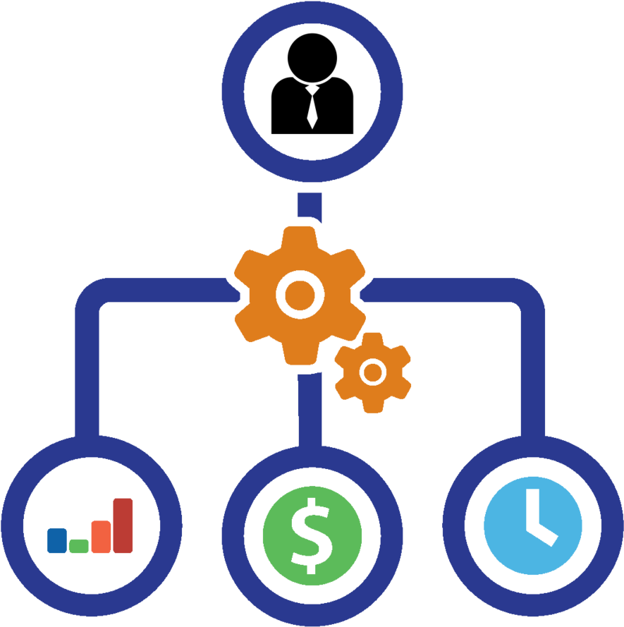
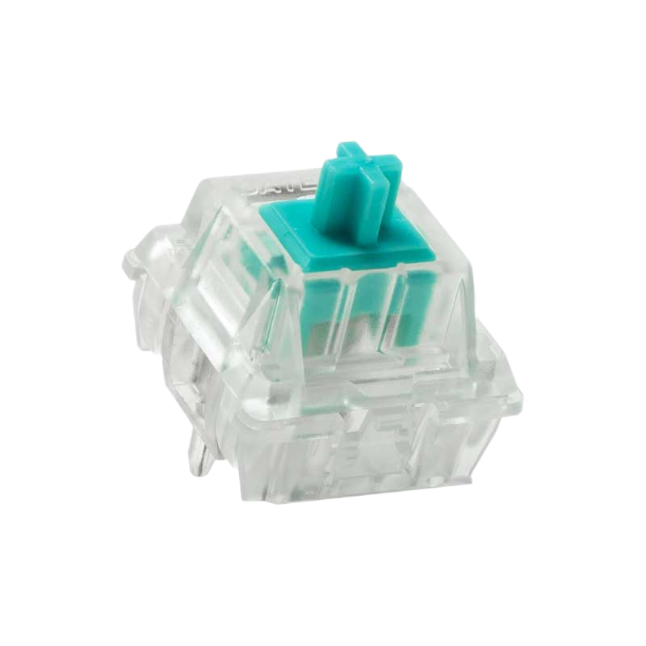

Tung's Portfolio Website

Welcome to Tung's internet cave! I'm currently a 4th year studying Informatics with a specialization in Organizations and Information Technology. I'm estimated to graduate from UCI in June 2022.
I'm currently working as an ETL developer intern for UCI OIT and have been for the past 3 months. My goal is to eventually become a project manager for an influential corporation that strives to better society. I thrive the most in team environments and find the most enjoyment when I am in one. To eventually reach the position I want, I've completed several team projects under the project manager role to get a better understanding of it and prepare myself for my work in the future. Needless to say, I have also stepped down from the leadership role to be an ordinary team member in order to better understand all perspectives of the dynamic and get a better sense of the people I will want to lead in the future.
In my free time I participate in several hobbies including collecting and other forms of entertainment. I tend to collect high-end figures and statues and bespoke custom mechanical keyboards. When I’m sitting at my desk I'm usually gaming, listening to music, or just kicking back and watching streamers to relax.
